ЗУПИНКА №1
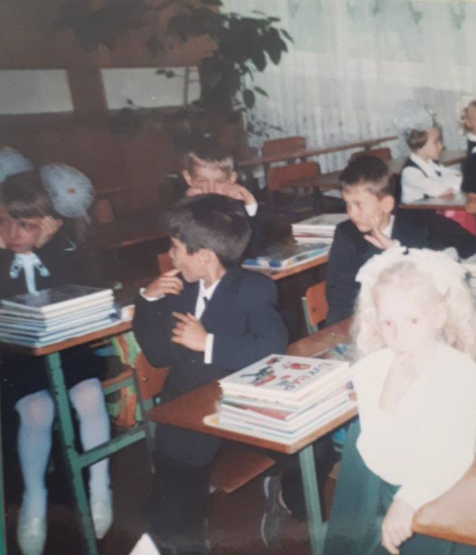
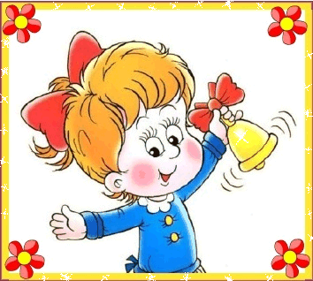
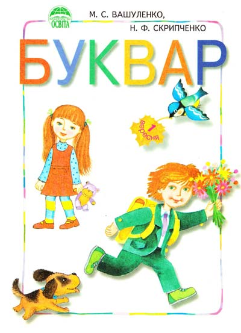
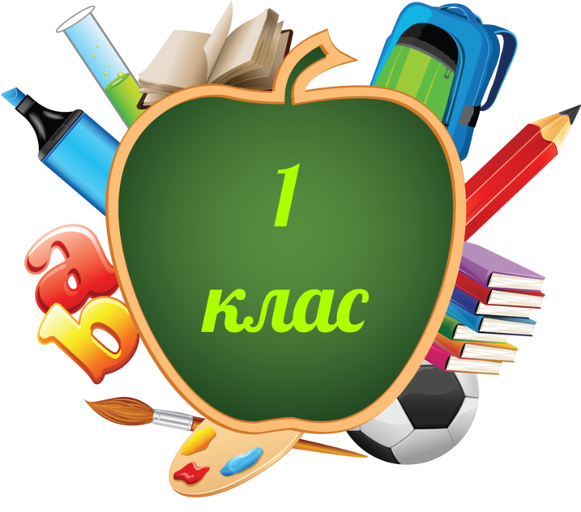
Пам'ятаєш, як першого дня у школі ти була настільки зворушена моментом, що вирішила поплакати за компанію?
Так ось я бажаю тобі плакати за компанію лише в моменти найщасливіших подій у твоєму житті.
P.S.: той день теж був щасливим (хоч ми тоді того не усвідомлювали)
Так ось я бажаю тобі плакати за компанію лише в моменти найщасливіших подій у твоєму житті.
P.S.: той день теж був щасливим (хоч ми тоді того не усвідомлювали)
ЗУПИНКА №2

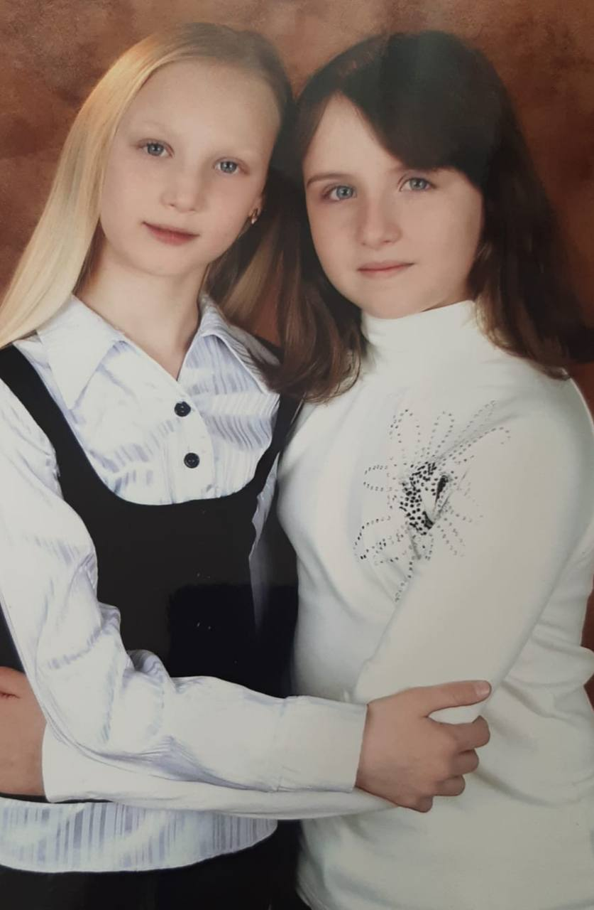
А це, напевно, наша перша спільна фотографія.
Вже тоді я відчула, що ти будеш особливою людинкою в моєму житті. Тому так міцно вчепилась у твій лікоть! хі-хі
Сьогодні бажаю тобі, щоб твої близькі завжди були поруч, підтримували тебе, любили та оберігали.
Нехай всі мрії цієї маленької Ані здійсняться!
Вже тоді я відчула, що ти будеш особливою людинкою в моєму житті. Тому так міцно вчепилась у твій лікоть! хі-хі
Сьогодні бажаю тобі, щоб твої близькі завжди були поруч, підтримували тебе, любили та оберігали.
Нехай всі мрії цієї маленької Ані здійсняться!
ЗУПИНКА №3
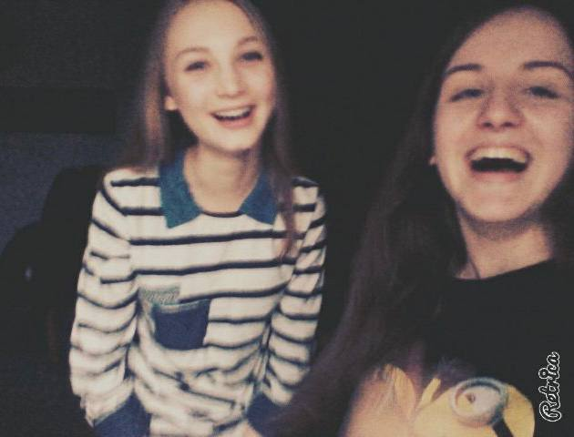
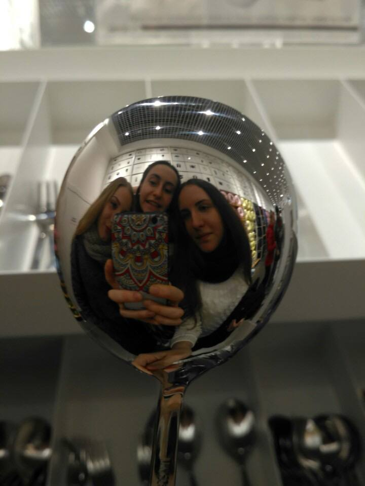
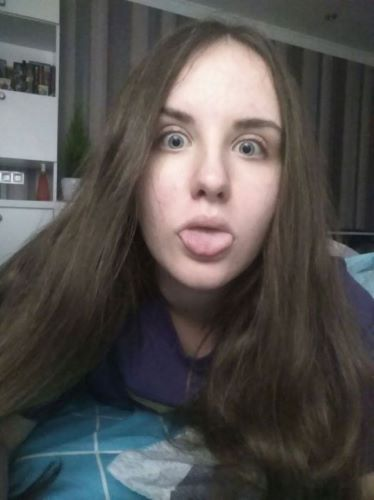
Додамо трохи дурощів :))
Бажаю, щоб завжди знаходився час "на подуркувати", навіть коли тобі вже далеко за 20! (ета жі самсем ні повад ґрустіть)
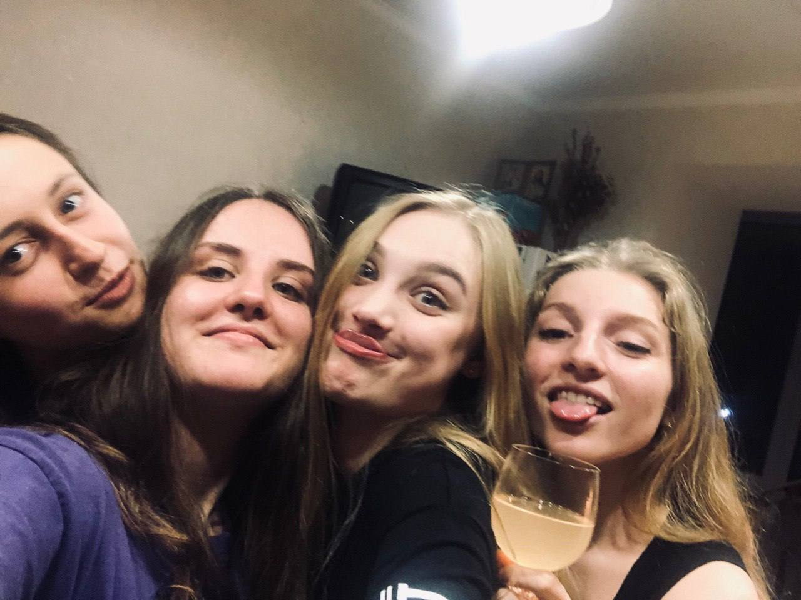
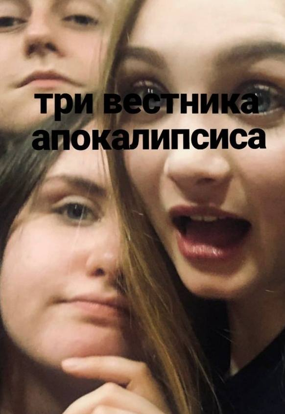
Бажаю, щоб завжди знаходився час "на подуркувати", навіть коли тобі вже далеко за 20! (ета жі самсем ні повад ґрустіть)
ЗУПИНКА №4
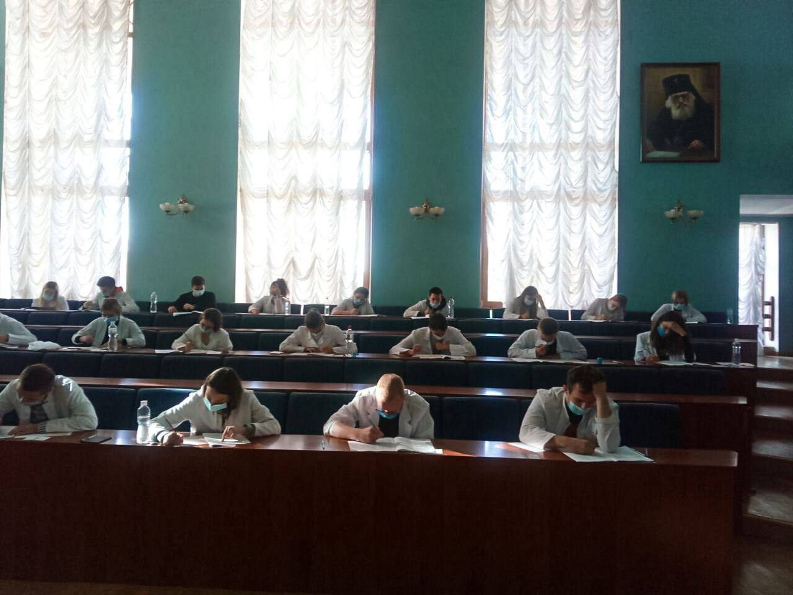
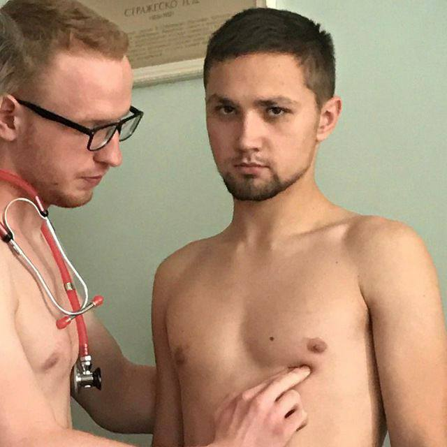
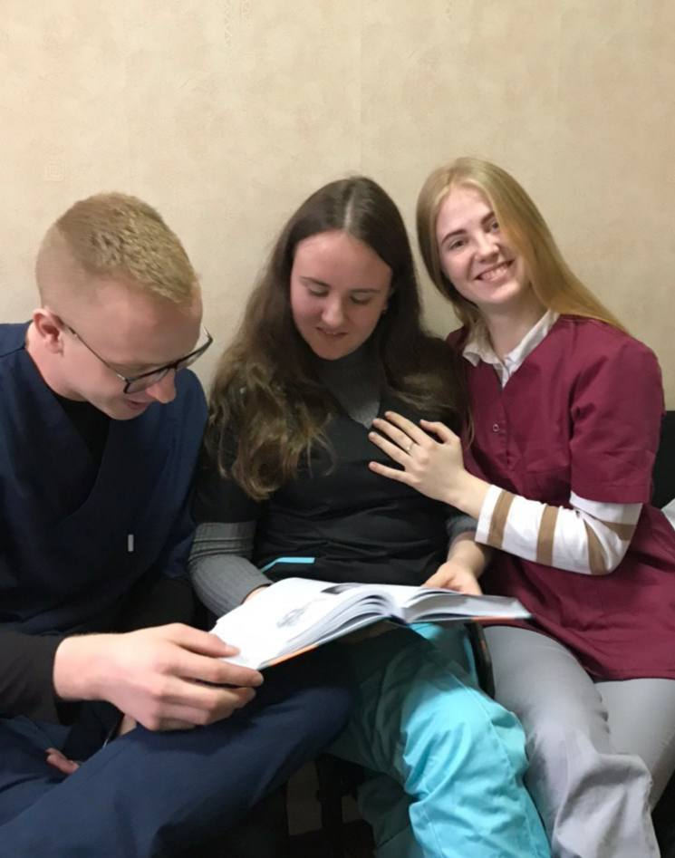
Незабутні університетські роки...
Што ж, я бажаю тобі стати класним акушер-гінекологом. Ти пройшла довгий шлях, і головне - успішно! Нехай твоя кар'єра буде ще успішнішою (рукі в тєплє і дєнгі в карманє, как гаваріцца)
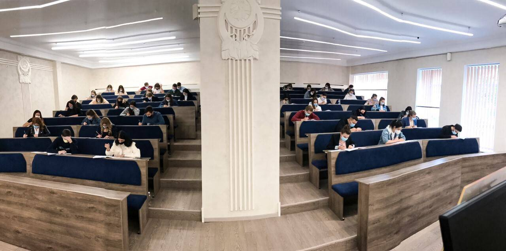
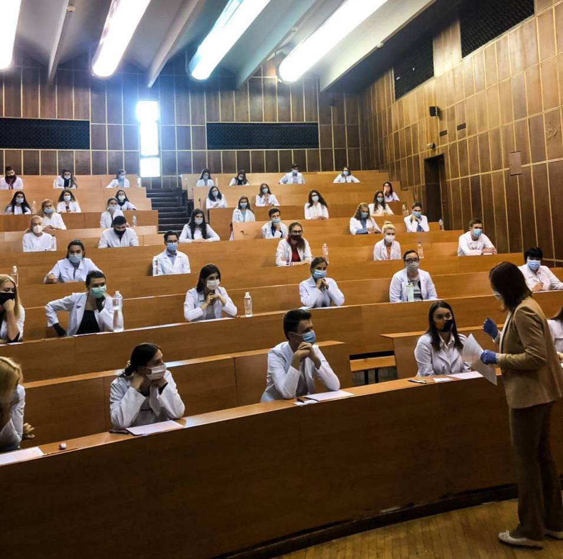
Што ж, я бажаю тобі стати класним акушер-гінекологом. Ти пройшла довгий шлях, і головне - успішно! Нехай твоя кар'єра буде ще успішнішою (рукі в тєплє і дєнгі в карманє, как гаваріцца)
ЗУПИНКА №5
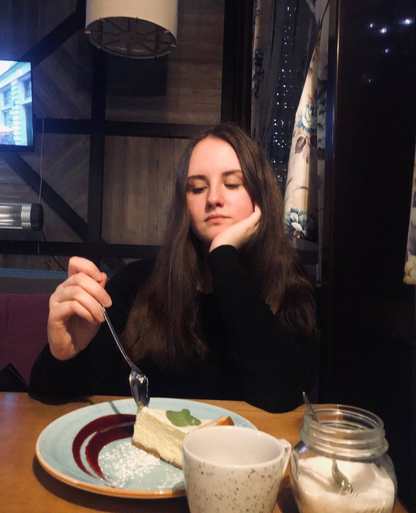 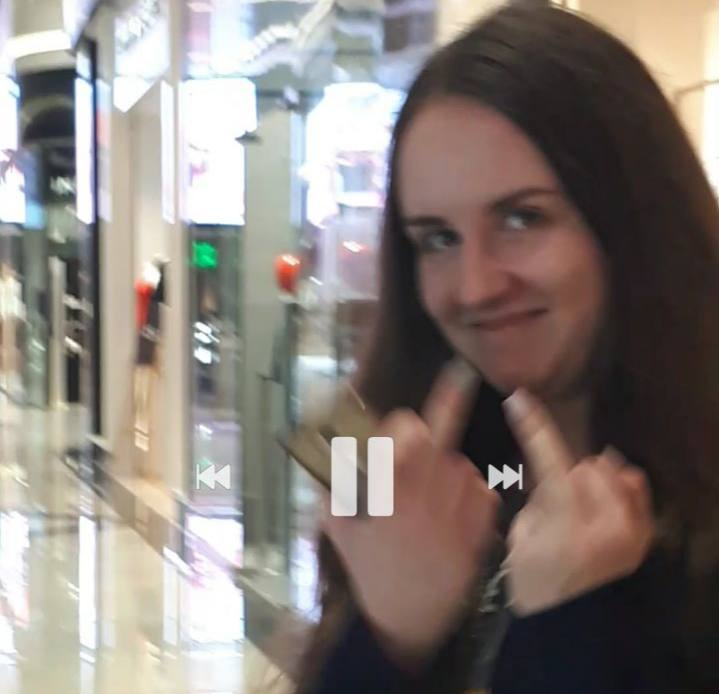
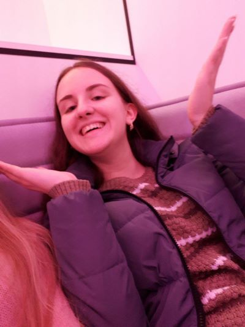
Просто будь собою! Ти неймовірна <3
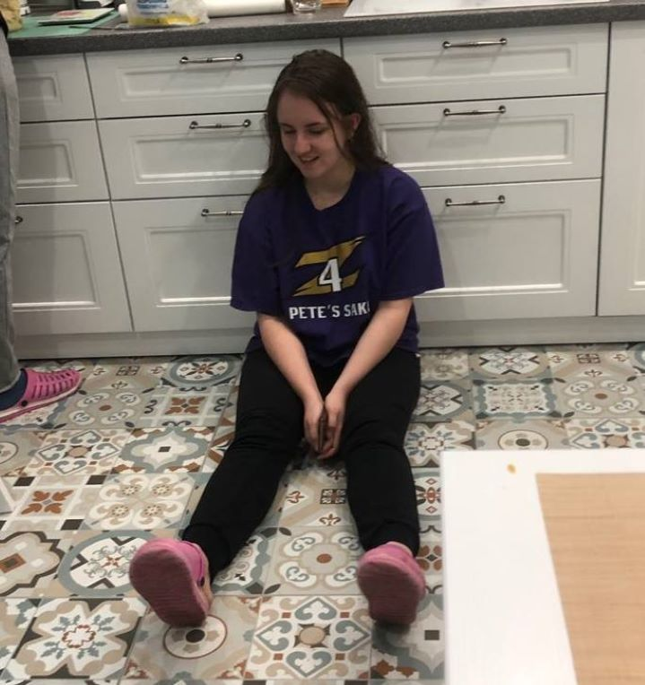
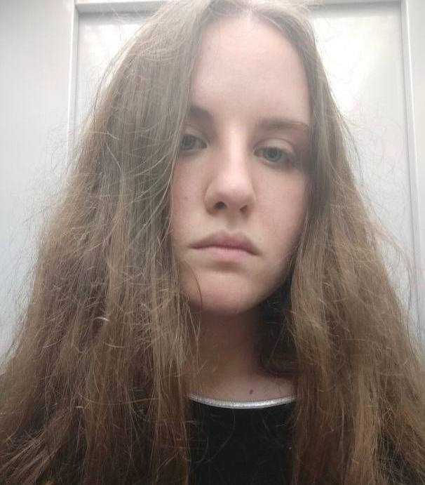